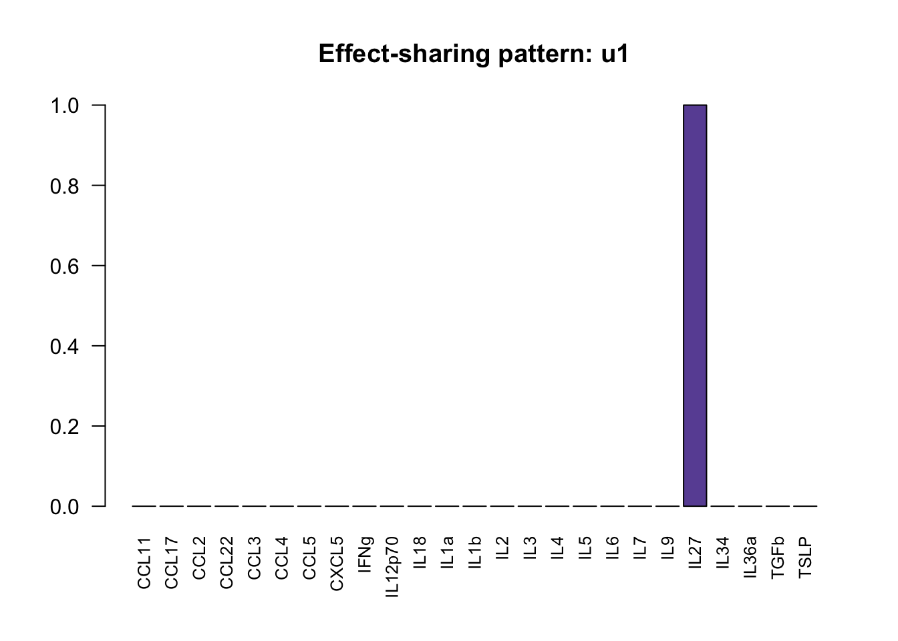
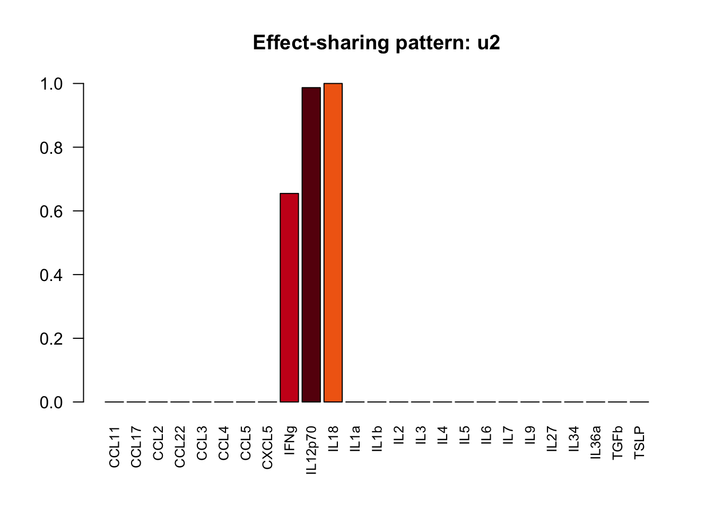
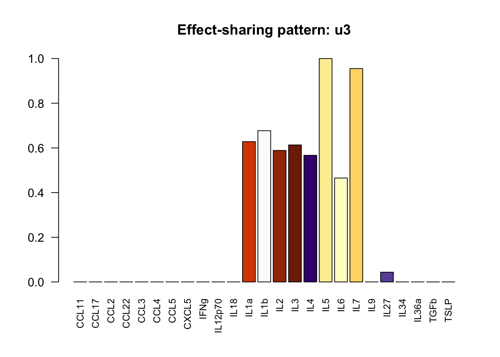

Last updated: 2021-03-31
Checks: 7 0
Knit directory: poisson_mash_sc/
This reproducible R Markdown analysis was created with workflowr (version 1.6.2). The Checks tab describes the reproducibility checks that were applied when the results were created. The Past versions tab lists the development history.
Great! Since the R Markdown file has been committed to the Git repository, you know the exact version of the code that produced these results.
Great job! The global environment was empty. Objects defined in the global environment can affect the analysis in your R Markdown file in unknown ways. For reproduciblity it’s best to always run the code in an empty environment.
The command set.seed(20210330) was run prior to running the code in the R Markdown file. Setting a seed ensures that any results that rely on randomness, e.g. subsampling or permutations, are reproducible.
Great job! Recording the operating system, R version, and package versions is critical for reproducibility.
Nice! There were no cached chunks for this analysis, so you can be confident that you successfully produced the results during this run.
Great job! Using relative paths to the files within your workflowr project makes it easier to run your code on other machines.
Great! You are using Git for version control. Tracking code development and connecting the code version to the results is critical for reproducibility.
The results in this page were generated with repository version 29e0097. See the Past versions tab to see a history of the changes made to the R Markdown and HTML files.
Note that you need to be careful to ensure that all relevant files for the analysis have been committed to Git prior to generating the results (you can use wflow_publish or wflow_git_commit). workflowr only checks the R Markdown file, but you know if there are other scripts or data files that it depends on. Below is the status of the Git repository when the results were generated:
Ignored files:
Ignored: .DS_Store
Note that any generated files, e.g. HTML, png, CSS, etc., are not included in this status report because it is ok for generated content to have uncommitted changes.
These are the previous versions of the repository in which changes were made to the R Markdown (analysis/simulations.Rmd) and HTML (docs/simulations.html) files. If you’ve configured a remote Git repository (see ?wflow_git_remote), click on the hyperlinks in the table below to view the files as they were in that past version.
| File | Version | Author | Date | Message |
|---|---|---|---|---|
| Rmd | 29e0097 | yushaliu | 2021-03-31 | Update results for poisson mash ruv on scdata |
1. poisson mash: fit poisson mash with gene-specific means and random effects to the count data while not accounting for unwanted variation.
2. poisson mash ruv: fit poisson mash with gene-specific means and random effects to the count data while accounting for unwanted variation. For ruv, the \(J \times D\) factor matrix is estimated using GLMPCA while protecting the condition-specific effects.
3. mash: fit mash with gene-specific means and random effects to the gene expression data normalized using Seurat while not accounting for unwanted variation. We set \(\alpha = 1\), i.e., the EZ model.
4. mash ruv: fit mash with gene-specific means and random effects to the normalized data while accounting for unwanted variation. For ruv, the \(J \times D\) factor matrix is estimated using flashier while protecting the condition-specific effects. We set \(\alpha = 1\), i.e., the EZ model.
5. mash cb: fit mash with no common baseline to the normalized data using mashr, where the reference is the mean over all conditions. We set \(\alpha = 1\), i.e., the EZ model. The implementation is similar to method 3 but without the random effect term. Also, the selection of “strong” subset of genes in the ED step is conducted differently.
We also implemented the best-performing methods identified by this comprehensive benchmark paper, which evaluated 36 approaches that have been developed for DE analysis on bulk RNA-seq data or scRNA-seq data. We only considered methods that allow for comparison across multiple (\(>2\)) conditions, and performed an ANOVA-like test for differences between any of the conditions. With each approach, we obtained a gene-wise p-value adjusted for multiple comparisons based on FDR.
6. edgeR-QLF-DetRate: fit a quasi-likelihood negative binomial generalized log-linear model to the count data which includes the cellular detection rate (the fraction of genes that are detected with nonzero counts) as a covariate in the model.
7. MAST-cpm-DetRate: fit a two-part generalized linear model to test DE, with one component modeling the discrete expression rate of each gene across cells and the other component modeling the conditional continuous expression level. The cellular detection rate is included as a covariate in the model.
8. limma-trend: fit limma-trend to the \(\log_2\) transformed CPM data.
9. Kruskal-Wallis test: perform Kruskal-Wallis test for DE analysis, which is a non-parametric analogue of ANOVA.
To simulate single cell data, we started with a subset of the single cell cytokines data. We first randomly permuted the cells with respect to the condition labels to create null data, then used thinning to add condition effects \(\beta_{jr} \sim \sum_k \pi_k MVN(0, U_k)\) to a subset of genes, where the prior covariances \(U_k\)’s are learned from the poisson mash fit to a subset of B cells in the original dataset, with the effect size (in terms of \(\max_r \mid \beta_{jr}\mid\)) further scaled to be realistic. We started with the following subsets of the real data, and removed genes with fewer than 25 counts summed over all cells.
Setting 1: a subset of B cells with 8,358 genes and 2,096 cells from 25 cytokine treatments.
Setting 2: a larger subset of B cells with 10,691 genes and 15,705 cells from 25 cytokine treatments.
Setting 3: a subset of cells from “Ctrl2” with 9,041 genes and 2,182 cells from 8 cell types. Since the DE analysis results across cell types, which are themselves identified based on gene expression profiles, are dubious without appropriate correction, we only assessed the performance of methods on simulated null data under this scenario.
We simulate 20 single cell datasets for each scenario.
### read in result summary
num_effects <- readRDS("../simulations_sc/setting1/sim_null_summary.Rds")
### number of false positives
num_effects rep1 rep2 rep3 rep4 rep5 rep6 rep7 rep8 rep9 rep10 rep11 rep12
edgeRQLFDetRate 83 88 75 90 78 93 65 89 92 75 93 102
MASTcpmDetRate 1 1 0 2 0 0 0 0 1 0 2 1
limma-trend 1 1 0 3 0 0 0 0 1 0 2 0
KW-test 0 0 0 2 0 0 0 0 0 0 2 0
mash 11 11 13 11 3 7 7 5 12 5 7 11
mash cb 16 11 21 14 8 10 16 13 14 9 12 15
mash ruv 12 12 13 11 7 11 9 11 16 8 11 13
poisson mash 13 26 11 34 31 42 16 23 22 20 24 54
poisson mash ruv 11 25 7 36 9 9 10 8 10 13 26 9
rep13 rep14 rep15 rep16 rep17 rep18 rep19 rep20
edgeRQLFDetRate 93 67 80 90 84 90 91 92
MASTcpmDetRate 1 0 0 0 1 1 0 1
limma-trend 0 0 0 0 0 1 0 0
KW-test 0 0 0 1 1 1 0 1
mash 3 12 6 11 9 16 14 15
mash cb 9 13 12 11 15 19 16 14
mash ruv 6 19 9 13 12 21 17 17
poisson mash 16 12 17 24 38 11 25 16
poisson mash ruv 8 9 9 9 20 8 23 6### read in result summary
num_effects <- readRDS("../simulations_sc/setting2/sim_null_summary.Rds")
### number of false positives
num_effects rep1 rep2 rep3 rep4 rep5 rep6 rep7 rep8 rep9 rep10 rep11 rep12
edgeRQLFDetRate 35 25 23 24 26 30 24 21 23 22 32 27
MASTcpmDetRate 3 3 0 1 3 0 1 1 4 1 1 1
limma-trend 6 4 0 0 3 0 3 1 7 0 1 0
KW-test 2 1 0 0 3 0 2 1 6 0 1 1
mash 19 25 23 15 20 7 22 30 23 35 20 19
mash cb 24 24 23 31 25 12 32 28 21 35 29 19
mash ruv 20 22 24 13 21 9 23 29 20 36 23 22
poisson mash 13 10 19 81 24 23 9 24 23 18 22 40
poisson mash ruv 13 8 7 7 7 11 7 16 8 5 5 6
rep13 rep14 rep15 rep16 rep17 rep18 rep19 rep20
edgeRQLFDetRate 42 26 24 25 19 19 24 23
MASTcpmDetRate 0 0 3 2 1 1 1 1
limma-trend 0 0 3 2 1 1 0 1
KW-test 0 0 3 2 1 0 3 1
mash 15 17 21 16 14 33 21 36
mash cb 18 22 15 17 23 31 20 40
mash ruv 13 14 21 15 17 33 22 39
poisson mash 26 28 33 51 54 20 22 23
poisson mash ruv 11 11 8 10 10 10 9 10### read in result summary
num_effects <- readRDS("../simulations_sc/setting3/sim_null_summary.Rds")
### number of false positives
num_effects rep1 rep2 rep3 rep4 rep5 rep6 rep7 rep8 rep9 rep10 rep11 rep12
mash 0 0 0 0 0 0 0 0 0 0 0 0
mash cb 30 23 52 11 27 48 39 46 35 16 29 20
mash ruv 0 0 0 0 0 0 0 0 0 0 0 0
poisson mash 84 10 46 73 110 188 26 140 15 73 47 36
poisson mash ruv 9 3 11 13 5 14 6 5 5 6 8 2
rep13 rep14 rep15 rep16 rep17 rep18 rep19 rep20
mash 0 0 0 0 0 0 0 0
mash cb 12 22 25 16 90 60 22 48
mash ruv 0 0 0 0 0 0 0 0
poisson mash 96 114 74 146 143 100 33 120
poisson mash ruv 6 1 6 1 2 2 4 13cols.trt <- readRDS("../simulations_sc/setting2/condition_colors.Rds")
ulist.sim <- readRDS("../simulations_sc/setting2/ulist_sim.rds")
for (k in 1:length(ulist.sim$ulist)){
v <- pmax(ulist.sim$ulist[[k]], 0)
barplot(v/v[which.max(abs(v))], names = names(cols.trt), cex.names = 0.8, las = 2, main = paste0("Effect-sharing pattern: u", k), col = cols.trt)
}
sessionInfo()R version 3.6.2 (2019-12-12)
Platform: x86_64-apple-darwin15.6.0 (64-bit)
Running under: macOS 10.16
Matrix products: default
BLAS: /Library/Frameworks/R.framework/Versions/3.6/Resources/lib/libRblas.0.dylib
LAPACK: /Library/Frameworks/R.framework/Versions/3.6/Resources/lib/libRlapack.dylib
locale:
[1] en_US.UTF-8/en_US.UTF-8/en_US.UTF-8/C/en_US.UTF-8/en_US.UTF-8
attached base packages:
[1] stats graphics grDevices utils datasets methods base
other attached packages:
[1] workflowr_1.6.2
loaded via a namespace (and not attached):
[1] Rcpp_1.0.6 rprojroot_2.0.2 digest_0.6.27 later_1.0.0
[5] R6_2.5.0 git2r_0.27.1 magrittr_2.0.1 evaluate_0.14
[9] stringi_1.4.6 rlang_0.4.10 fs_1.4.1 promises_1.1.0
[13] whisker_0.4 rmarkdown_2.3 tools_3.6.2 stringr_1.4.0
[17] glue_1.4.2 httpuv_1.5.2 xfun_0.17 yaml_2.2.1
[21] compiler_3.6.2 htmltools_0.4.0 knitr_1.30